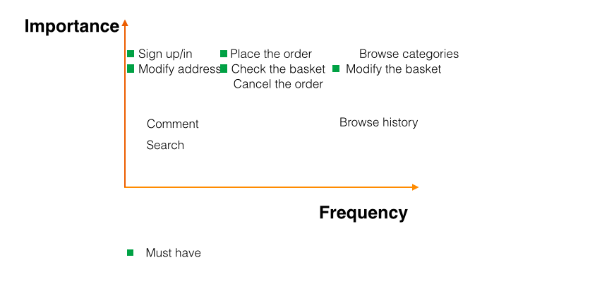

Coffee House
This is an application for a coffee shop to sell coffee online
The big picture

Needs finding and requirement analysis
Users' needs were analyzed and transformed into functional requirmenets. Those requirements were piorized.
Design alternatives
Thare are two way for odering coffee, sugar and cream